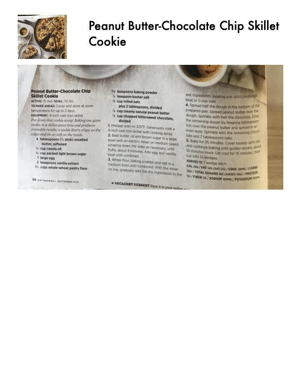

Peanut Butter-Chocolate Chip Skillet Cookie

Original cookbook page 67
A decadent dessert — one giant cookie baked in a skillet that's crispy on the edges and oh-so-soft on the inside.
Prep: 15 min • Cook: 45 min • Total: 1¾ hrs
Ingredients
- 4 tablespoons (½ stick) unsalted butter, softened
- ¼ cup canola oil
- ½ cup packed light brown sugar
- 1 large egg
- 2 teaspoons vanilla extract
- 1¼ cups whole-wheat pastry flour
- 1½ teaspoons baking powder
- ½ teaspoon kosher salt
- ¾ cup rolled oats
- 2 tablespoons natural peanut butter (plus more)
- ½ cup chopped bittersweet chocolate, divided
Instructions
- Preheat oven to 325°F. Coat a 9-inch cast-iron skillet with cooking spray.
- Beat butter, oil, and brown sugar until fluffy, about 4 minutes. Add egg and vanilla.
- Whisk flour, baking powder, and salt in a separate bowl; gradually add dry ingredients to butter mixture. Beat in oats.
- Spread half the dough in the prepared skillet.
- Spread peanut butter over the dough, then sprinkle with half the chocolate.
- Top with remaining dough and remaining chocolate.
- Bake for 35 minutes, then cover loosely with foil and continue baking until golden brown, about 10 more minutes.
- Cool for 15 minutes, then cut into 12 wedges.
Recipe #67 from collection